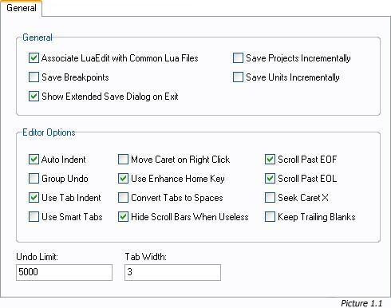
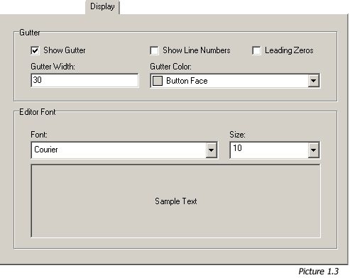
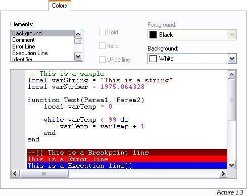

Just like other IDEs, LuaEdit allows customization of its own environment. This section will explain
the different modifications available through the "Editor Settings Window". This window, available
via the menu "Tools/Editor Settings...", is divisied in three major categories: "General", "Display"
and "Colors".
The General Tab (Picture 1.1)
This tab featrues miscellaneous options for the code editor and the IDE.

- "Associate LuaEdit with Common Lua File"
Check this option to associate the common *.lua and *.lpr files with LuaEdit in Windows. When checked,
LuaEdit will ask for a system reboot in order for those changes to take effect. Once done, it is
now possible to simply double-click on *.lua or *.lpr files and LuaEdit will handle automatic opening.
- "Save Breakpoints"
Check this option in order to allow LuaEdit saving the breakpoints information such as their conditions
and positions while saving a file. Next time you will reopen this file, the breakpoints should be reinitialized.
- "Show Extended Save Dialog on Exit"
Check this option in order to display a window wich groups all new or modified files opened that might need
to be saved when exiting LuaEdit. Without this option, LuaEdit will popup a message box for every file that
required a save on after the other.
- "Save Projects Incrementally"
Check this option in order to save *.lpr files in an incremental way. This means that if this option is checked
and you opened a file called "Project5.lpr", it will automatically save the file as "Project6.lpr" next time
you will save it. Just like "Project.lpr" will result into "Project1.lpr". This can be a good, safe and quick
way to backup files everytime you save it. (3D studio max has the same kind of feature)
- "Save Units Incrementally"
Check this option in order to save *.lua files in an incremental way. This means that if this option is checked
and you opened a file called "Unit9.lua", it will automatically save the file as "Unit10.lpr" next time
you will save it. Just like "Unit.lpr" will result into "Unit1.lpr". This can be a good, safe and quick
way to backup files everytime you save it. (3D studio max has the same kind of feature)
- "Auto Indent"
This option will make the code editor indenting the caret on new lines with the same amount of leading white spaces
or tabs as the preceding line.
- "Group Undo"
This will make undo/redo actions to handle all continous changes of the same kind in one call instead undoing/redoing
each changes separately on after the other.
- "Use Tab Indent"
Check this option in order to simulate the indent/unindent actions on the current selection by pressing the [Tab]
and [Shift+Tab].
- "Use Smart Tabs"
Check this option in order to send the cursor to the next non-white space character of the previous line when pressing
the [Tab] key.
- "Move Caret on Right Click"
Check this option in order to move the caret position when right clicking on the code editor. (This will still popup
the code editor popup menu)
- "Use Enhance Home Key"
Check this option in order to send the cursor to the first non-white space character of the current line instead of the
very begining of the current line. (If checked, press twice to do so)
- "Convert Tabs to Spaces"
Check this option in order to converts tab characters into the specified number of space characters for a tab.
- "Hide Scroll Bars When Useless"
Check this option in order to hide the scroll bars whenever they are disabled because they can't scroll.
- "Scroll Past EOF"
Check this option in order to allow scrolling even though the End Of File is reached.
- "Scroll Past EOL"
Check this option in order to allow scrolling even though the End Of Line is reached.
- "Save Breakpoints"
Check this option in order to keep the X position of the caret when moving through lines
(Takes effects only if "Scoll Past EOL" is NOT check)
- "Keep Trailing Blanks"
If this option is checked, spaces at the End Of Lines will be trimmed and not saved.
- "Undo Limits"
Set in this field the number of undo allowed to LuaEdit. The higher this will be, the more memory LuaEdit might
take for Undo/Redo actions only.
- "Tab Width"
Set in this field the width of a tab character in spaces. For example, if this setting is set to 4, a tab character
will have the equivalent of 4 white spaces.
The Display Tab (Picture 1.2)
This tab features display options for the gutter and the code editor.

- "Show Gutter"
Check/uncheck this option in order to display/hide the gutter on the code editor.
- "Show Line Numbers"
Check/uncheck this option in order to display/hide the line numbers in the gutter.
- "Leading Zeros"
Check/uncheck this option in order to display/hide leading zeros for the line numbers in the gutter.
(Works only if the "Show Line Numbers" option is check)
- "Gutter Width"
Set in this field the total width of the gutter in pixels. (excluding the line numbers because
they make the gutter's width beeing recalculated every time they display or hide)
- "Gutter Color"
Choose the color you want for the gutter to be painted with. (The colors proposed in the list and
the colors you can choose on the light spectrum may vary according to your Operating System and its Display Settings)
- "Font"
Choose the type of font that will be used to display the code in the code editor. (The fonts proposed in the list
may vary according to your Operating System)
- "Size"
Set in this field the size of the font in points to be used to display the code in the code editor.
The Colors Tab (Picture 1.3)
This tab features color options for the the code editor only.

- "Elements"
The item selected in this list will be afected by all other options in this tab. This list groups
all kind of tokens in Lua scripts such as strings and numbers.
- "Bold"
Check this option in order to make the selected token being bold in the code editor.
- "Italic"
Check this option in order to make the selected token being italic in the code editor.
- "Underline"
Check this option in order to make the selected token being underline in the code editor.
- "Foreground"
Choose the color you want for the selected token's foreground to be painted with. (The colors proposed in the list and
the colors you can choose on the light spectrum may vary according to your Operating System and its Display Settings)
- "Background"
Choose the color you want for the selected token's background to be painted with. (The colors proposed in the list and
the colors you can choose on the light spectrum may vary according to your Operating System and its Display Settings)
|